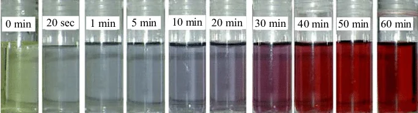
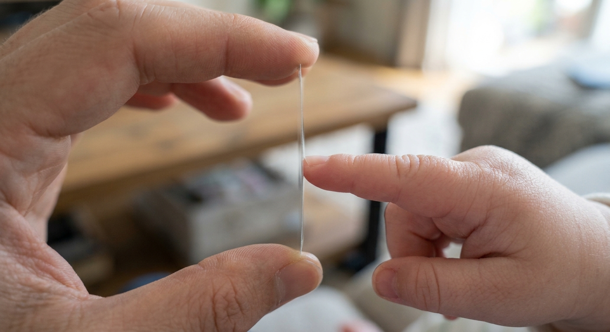
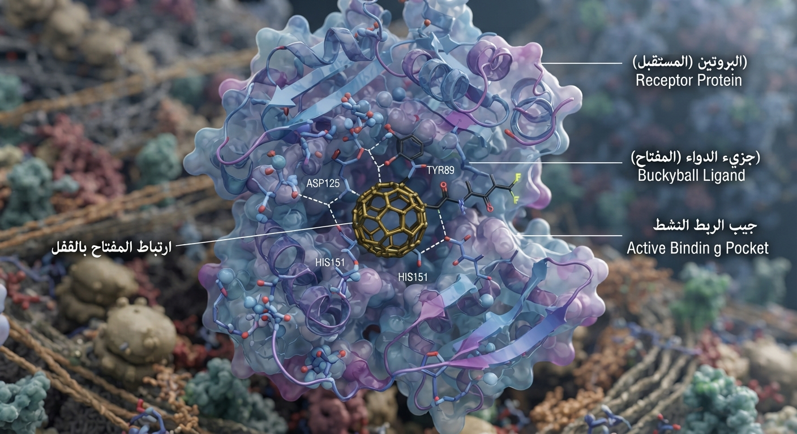

Nanochemistry is the study of very small materials at the nanoscale.
كيمياء النانو هي العلم اللي بيدرس المواد متناهية الصغر لما تكون في مقياس النانو.
Scientists discovered that when ordinary materials like gold or carbon are reduced to this tiny scale, they show completely new chemical and physical behaviors.
العلماء اكتشفوا إننا لما نصغّر المواد العادية (زي الدهب أو الكربون) للحجم الدقيق جداً ده، بتظهر ليها خصائص وسلوكيات كيميائية وفيزيائية جديدة تماماً مكنتش موجودة وهي في حجمها الطبيعي!

A nanometer (nm) is a very small unit of length.
النانومتر ويرمز له بالرمز nm هو وحدة قياس طول صغيرة جداً بنستخدمها عشان نقيس أبعاد الجسيمات الدقيقة دي.
1 nanometer = one billionth of a meter (1 nm = 10⁻⁹ m).
النانومتر الواحد بيساوي جزء من المليار من المتر العادي 1 nm = 10⁻⁹ m (يعني لو جبنا عصاية طولها متر وقطعناها لمليار حتة متساوية، حتة واحدة بس منهم هتبقى هي الـ 1 نانومتر!).
To see and measure nanomaterials at this extreme scale, scientists use a Scanning Electron Microscope (SEM) that fires a beam of electrons instead of ordinary light.
وعشان نقدر نشوف ونقيس المواد في الحجم المتناهي الصغر ده، العلماء بيستخدموا جهاز الميكروسكوب الإلكتروني الماسح (SEM) اللي بيطلع شعاع من الإلكترونات عشان يفحص العينة.
🧠 أسئلة عم سمسم وعم سمير (القسم الأول)
سؤال 1 من عم سمسم:
Uncle Semsem doesn't understand: Why can't we just use a regular microscope with super strong glass lenses to see a 1-nanometer particle instead of building an expensive Electron Microscope?
عم سمسم دلوقتي مش فاهم: ليه منقدرش نركب عدسات إزاز مكبرة قوية جداً في ميكروسكوب عادي ونشوف بيها حاجة حجمها 1 نانومتر، بدل ما نكلف نفسنا ونستخدم ميكروسكوب إلكتروني معقد؟
Ordinary light waves are too fat (about 400 to 700 nanometers wide). Trying to feel a 1-nanometer particle with a 500-nanometer light wave is like trying to pick up a tiny grain of sand while wearing giant boxing gloves! Electrons are thousands of times smaller, so they easily hit the nanoparticle.
تخيل إنك لابس جوانتي ملاكمة ضخم جداً زي الراجل اللي في الصورة ده، وبتحاول تمسك بيه حباية رمل صغيرة من على الأرض؛ الجوانتي كبير وتخين جداً فمستحيل يحس بحباية الرمل أو يمسكها! ده بالظبط اللي بيحصل مع الضوء العادي: موجة الضوء العادي تخينة جداً (عرضها من 400 لـ 700 نانومتر)، يعني أتخن من جسيم النانو بـ 500 مرة! فالموجة بتعدي من فوق جسيم النانو من غير ما تخبط فيه وترجع لعنينا. عشان كده بنستخدم "الإلكترونات" لأنها رفيعة ودقيقة جداً فبتقدر تخبط في ذرات النانو وترسملنا صورتها.
✅ دي الإجابة يا عم سمسم!
سؤال 2 من عم سمير:
Uncle Samir asks a harder question: A gold atom is still the exact same gold atom, so why does gold change its color from shiny yellow to ruby red when we shrink it to 10 nanometers?
طب عم سمير بيسأل سؤال تاني: هي مش ذرة الدهب هي نفس ذرة الدهب ومغيرناش نوعها؟ أمال ليه الدهب لما بنصغره لحجم النانو لونه بيتغير من الأصفر اللامع للأحمر الياقوتي؟
Think of a radio antenna: a long antenna catches certain waves, while a tiny antenna catches completely different ones. In a big gold bar, electrons reflect yellow light. But in a tiny 10nm ball, they are squeezed and vibrate differently, reflecting red instead!
تخيل إريال الراديو والتلفزيون بتاع زمان: لو الإريال طويل ومفرود، بيلقط قنوات وموجات معينة، ولو قصرته خالص بيلقط قنوات تانية خالص! الدهب برضه كده؛ الإلكترونات اللي جواه بتلعب مع الضوء. في سبيكة الدهب الكبيرة، بتعكس اللون الأصفر اللي كلنا عارفينه. لكن لما تكسر الدهب وتصغره لكورة نانو صغيرة جداً (10 نانومتر)، الإلكترونات بتتزنق وتتغير حركتها، فتبدأ تعكس درجات الأحمر والبنفسجي، زي ما هو باين قدامك وشايفه بعينيك الاتنين في الأنابيب!
✅ دي الإجابة يا عم سمير!

The nanoscale usually refers to sizes between 1 and 100 nanometers.
مقياس النانو هو النطاق اللي بيضم أي حاجة حجمها من 1 لحد 100 نانومتر.
Water Molecule (0.1 nm): We start at a real water pond and zoom in billions of times to reach a single H₂O molecule measuring 0.1 nanometers.
1. جزيء الماء (0.1 nm): نبدأ من بركة المياه ونقرب مليارات المرات لنصل إلى جزيء ماء واحد (H₂O) حجمه 0.1 نانومتر.
All 7 Examples Side-by-Side in 3D: From the 0.1 nm Water Molecule and 0.5 nm Benzene, through Carbon Nanotubes and the 10 nm Gold Nanoparticle inside the nanoscale, up to the 1 µm Virus, 5 µm Red Blood Cell, and 100 µm Human Hair.
مقارنة الأمثلة السبعة جنباً إلى جنب بالـ 3D: ترتيب الأمثلة من الأصغر للأكبر: جزيء الماء 0.1 nm، البنزين 0.5 nm، أنبوبة الكربون النانوية، جسيم الذهب النانوي 10 nm، الفيروس 1 µm، خلية الدم الحمراء 5 µm، وشعرة الإنسان 100 µm.
🧠 أسئلة عم سمسم وعم سمير (القسم الثاني)
سؤال 1 من عم سمسم:
Uncle Semsem is confused: Why did scientists set the starting line of the nanoscale at 1 nanometer and kick out the water molecule (0.1 nm) and benzene (0.5 nm) even though they are super small?
عم سمسم دلوقتي مش فاهم: ليه العلماء حطوا بداية مقياس النانو من عند 1 نانومتر بالظبط، وطردوا جزيء المية (0.1 nm) والبنزين (0.5 nm) بره مقياس النانو مع إنهم صغيرين جداً؟
A single brick by itself is not a "building"—you need to stack dozens of bricks together to make a structure with rooms and walls. Similarly, a single water molecule (0.1 nm) is just one isolated brick of regular chemistry. Special nanoscale powers only appear when tens or hundreds of atoms group together to form a team measuring between 1 and 100 nanometers!
تخيل كده إننا بنبني عمارة.. هل ينفع تجيب طوبة واحدة وتقول عليها عمارة؟ أكيد لأ! لازم ترص طوب كتير جنب بعض عشان تبني حاجة ليها شكل وقيمة. نفس الفكرة بالظبط مع جزيء المية أو البنزين؛ دول مجرد "طوبة واحدة" لوحدها في الكيمياء العادية، وعشان كده العلماء مش بيعتبروهم نانو. خصائص النانو السحرية دي مابتظهرش غير لما يتجمع شوية ذرات حلوين مع بعض ويعملوا شلة أو جسيم حجمه من 1 لـ 100 نانومتر، وقتها بس نقدر نقول أهلاً بيك في عالم النانو!
✅ دي الإجابة يا عم سمسم!
سؤال 2 من عم سمير:
Uncle Samir asks: In our size chart, a Virus is 1 micrometer (1000 nanometers), while a Gold Nanoparticle is only 10 nanometers. How can a tiny nanoparticle that is 100 times smaller than the virus defeat and paralyze it?
طب عم سمير بيسأل سؤال تاني: في المقارنة بتاعتنا، الفيروس حجمه 1 ميكرومتر (يعني 1000 نانومتر)، وجسيم النانو حجمه 10 نانومتر بس (يعني الفيروس أكبر منه بـ 100 مرة!)؛ إزاي جسيم النانو الصغير ده يقدر يغلب الفيروس ويشل حركته؟
Imagine you are a giant, strong guy, and suddenly 100 little kids jump on you from every single angle—holding your hands, legs, and back at the exact same time. You won't be able to move a muscle! That is exactly what happens to the virus: because nanoparticles (10 nm) are 100 times smaller than the virus, hundreds of them swarm the virus from all sides and lock it down completely!
تخيل إنك شحط كبير وعريض، وفجأة هجم عليك 100 عيل صغير من كل ناحية! اللي متبت في إيدك، واللي ماسك في رجلك، واللي راكب فوق كتافك.. هتلاقي نفسك متكتف ومش عارف تتحرك خطوة واحدة! ده بالظبط اللي بيحصل مع الفيروس: جسيمات النانو دي أصغر من الفيروس بـ 100 مرة، فبتتلم عليه من كل حتة وتلزق في الشوك بتاعه وتكتفه تماماً، فميقدرش يخترق خلايا جسمنا ويفضل عاجز!
✅ دي الإجابة يا عم سمير!

Nanomaterials are materials that have at least one dimension in the nanoscale range.
المواد النانوية هي المواد اللي عندها بُعد واحد على الأقل (طول أو عرض أو ارتفاع) بيقع في نطاق مقياس النانو (من 1 لـ 100 نانومتر).
Examples of Nanomaterials: 1. Gold nanoparticles, 2. Silver nanoparticles, 3. Carbon nanotubes.
أمثلة المواد النانوية:
1. جسيمات الذهب النانوية.
2. جسيمات الفضة النانوية.
3. أنابيب الكربون النانوية.
1. جسيمات الذهب النانوية.
2. جسيمات الفضة النانوية.
3. أنابيب الكربون النانوية.
🧠 أسئلة عم سمسم وعم سمير (القسم الثالث)
سؤال 1 من عم سمسم:
Uncle Semsem asks: Why did the definition say "at least one dimension"? If I have a plastic wrap sheet that is 2 meters long and 1 meter wide, how can it be a nanomaterial?
عم سمسم دلوقتي مش فاهم ليه التعريف قال "بُعد واحد على الأقل"؟ يعني لو عندي طبقة تغليف طولها مترين وعرضها متر وشايفها بعيني، إزاي أسميها مادة نانوية؟
Look at the ultra-thin screen protector between fingers: even though it covers the entire phone screen, its thickness is only a few nanometers thin! Because electrons are squeezed inside that nanoscale thickness, the entire sheet behaves with special nanoscale physics.
زي ما هو باين قدامك وشايفه بعينيك الاتنين في الصورة اللي جنبك: دي طبقة الحماية الرقيقة جداً اللي بنحطها على شاشة الموبايل وماسكينها بين الصوابع. هي آه عريضة ومغطية شاشة الموبايل كلها، بس "السمك أو التخن" بتاعها رقيق جداً لدرجة إنه يقع في مقياس النانو! طالما الذرات اتزنقت في السمك النانوي ده، المادة بتكتسب خصائص النانو فوراً حتى لو طولها وعرضها كبار شايفينهم بعنينا.
✅ دي الإجابة يا عم سمسم!

سؤال 2 من عم سمير:
Uncle Samir asks: Pencil lead (graphite) and Carbon Nanotubes are both made 100% of pure carbon atoms. Why does pencil lead snap with your finger while a Carbon Nanotube is stronger than steel?
طب عم سمير بيسأل سؤال تاني: هو مش سن القلم الرصاص وأنابيب الكربون النانوية الاتنين مكونين من ذرات كربون بس؟ أمال ليه سن القلم الرصاص بيتقطم في إيدينا بينما أنبوبة الكربون أقوى من الحديد الصلب بكتير؟
Look at the playing cards picture: loose paper cards stacked without glue slide off and fly away with the slightest breeze—that's pencil graphite, loose carbon layers sliding over each other. But when you glue the cards solidly together and roll them into a locked, bonded tube, they become an unbreakable pillar!
بص لصورة الكوتشينة دي زي ما هو باين قدامك: ورق الكوتشينة اللي على اليمين سايب فوق بعضه من غير أي لزق، فأول ما المروحة اشتغلت الورق اتزحلق وطار في ثواني (ده بالظبط سن القلم الرصاص، طبقات كربون سايبة بتتزحلق وتتقصف بسهولة). لكن رزمة الكوتشينة اللي في النص مصبوب عليها شمع ولزق ماسك كل ورقة في اللي جنبها بقوة، فمهما شغلت عليها المروحة أو ضغطت عليها بقت كتلة صلبة واحدة مابتتكسرش! أنبوبة الكربون النانوية معمولة بنفس الفكرة: ذرات الكربون ملحومة ومترابطة في شكل أسطوانة متماسكة تماسك جبار.
✅ دي الإجابة يا عم سمير!
Nanomaterials may have special properties because of their very small size.
المواد النانوية ليها خصائص مميزة واستثنائية بسبب حجمها الصغير جداً.
1. Large Surface Area: They have a large surface area compared with their volume.
1. مساحة سطح كبيرة: المواد النانوية بتتميز إن مساحة سطحها الخارجية كبيرة جداً مقارنة بحجمها الثابت.
2. High Reactivity: Some nanomaterials react faster than large particles of the same material.
2. نشاط كيميائي عالٍ: بعض المواد النانوية بتتفاعل بشكل أسرع بكثير جداً من القطع الكبيرة لنفس المادة.
Easy Everyday Example (Potato Chips & Charcoal): A whole potato dropped in hot oil cooks slowly because oil only touches the outside peel, while slicing it into thin chips exposes all the hidden inner surfaces so it fries in seconds!
مثال بسيط جداً (البطاطس الشيبسي والفحم): لو حطيت بطاطساية كاملة سليمة في الزيت السخن، الزيت هيلمس القشرة اللي بره بس فهتاخد وقت طويل؛ لكن لما تقطعها شرائح شيبسي رفيعة، الحجم هو هو بس إنت كشفت كل الأجزاء اللي جوه للزيت في نفس اللحظة فتتحمر في ثواني! ونفس الكلام لما نكسر حتة فحم كبيرة لحتت صغيرة، النار والهواء بيلمسوا كل الذرات مع بعض فتولع فوراً.
💡 ملاحظة علمية هامة في نهاية التجربة
Notice how the solid iron bar does not catch fire when touching the flame, while the nano-iron powder bursts into sparks instantly in the air!
زي ما هو باين قدامك وشايفه بعينيك الاتنين في الفيديو: سبيكة الحديد الصلبة مبترضاش تولع بالنار، بينما بودرة الحديد النانوي أول ما رشتها في الهوا ولعت لوحدها واشتعلت في ثانية واحدة! السبب هو الزيادة الهائلة في مساحة السطح: في النانو كل ذرات الحديد اتكشفت للأكسجين مع بعض، فأتفاعلت واشتعلت في لحظتها!
🧠 أسئلة عم سمسم وعم سمير (القسم الرابع)
سؤال 1 من عم سمسم:
Uncle Semsem asks: Why is an atom sitting on the outside surface so eager and hungry to react compared to an atom sitting deep inside the material?
عم سمسم دلوقتي مش فاهم: ليه الذرة اللي قاعدة على السطح بره بتبقى "جعانة" ومتحمسة للتفاعل أسرع بكتير من الذرة اللي قاعدة جوه قلب المادة؟
Look at the people holding hands picture: the people in the middle have both hands locked by friends on left and right, so they can't grab anything. But the guy on the outer edge has a free hand reaching out in the air—ready to grab the money instantly! That's a surface atom: it has "free unbonded hands" eager to grab and react.
تخيل شلة صحاب ماشيين في الشارع وماسكين إيدين بعض جامد صف واحد زي ما هو باين قدامك في الصورة. اللي في النص إيديه الاتنين مشغولين (ماسك واحد يمينه وواحد شماله)، فلو 100 جنيه وقعت قدامه مش هيعرف يوطي يجيبها. لكن صاحبهم اللي على الحرف بره خالص، عنده إيد فاضية مش ماسكة في حد! فأول ما بيلمح الـ 100 جنيه بيخطفها في ثانية! ذرات السطح في النانو عاملة زي صاحبهم اللي على الحرف ده: إيديها الكيميائية فاضية وحرة، فأول ما تقابل مادة تانية بتهجم تمسك فيها وتتفاعل معاها طلقة!
✅ دي الإجابة يا عم سمسم!
سؤال 2 من عم سمير:
Uncle Samir asks: Iron is a heavy metal that doesn't catch fire when we hold a match to an iron nail. Why does nanoscale iron powder burst into flames the moment it touches air?
طب عم سمير بيسأل سؤال تاني: المسمار الحديد لو قربت منه كبريت مبيولعش، أمال ليه بودرة الحديد النانوية أول ما نرشها في الهوا بتولع لوحدها زي الألعاب النارية؟
An iron nail actually reacts with oxygen very slowly (that's rusting), and the tiny heat it makes spreads out and disappears into the thick metal nail. In nano-iron powder, billions of iron atoms touch oxygen at the exact same millisecond, releasing all that heat at once so it ignites immediately!
المسمار الحديد بيتفاعل مع أكسجين الهوا ببطء شديد على مدار شهور (واللي بنسميه الصدأ)، والحرارة البسيطة اللي بتطلع بتتشتت وتبرد جوه جسم المسمار التخين. إنما في بودرة الحديد النانوية، مليارات ذرات الحديد المكشوفة بتتفاعل مع الأكسجين في نفس جزء من الثانية، فالحرارة دي كلها بتطلع مرة واحدة وتخلي الحديد يشتعل في الهوا فوراً!
✅ دي الإجابة يا عم سمير!
1. Medicine: Nanoparticles can help deliver medicine to specific parts of the body. Example: Bucky Ball (C₆₀).
1. الطب (Medicine): بتساعد الجسيمات النانوية في توصيل الدواء بدقة لأجزاء محددة جوه الجسم، وأشهر مثال عليها هو كرة البوكي (Bucky Ball).
Example A (Bucky Ball C₆₀): A hollow soccer-ball-shaped cage made of 60 carbon atoms that hides medicine inside its core and releases it only at diseased cells. Example B (Gold Nanoshells): Nanoparticles that gather inside tumors and use infrared laser light to burn the tumor without surgery.
مثال (أ) كرة البوكي (C₆₀): كورة كربونية مفرغة من جوه بتتكون من 60 ذرة كربون وشكلها زي كرة القدم بالظبط، بنحفظ الدواء جواها عشان يمشي في الدم بأمان وميخرجش غير عند الخلية المريضة بس.
مثال (ب) كبسولات الذهب النانوية: بتتجمع جوه الأورام وبنسلط عليها أشعة تحت حمراء عشان تحولها لحرارة تقضي على الورم من غير جراحة.
مثال (ب) كبسولات الذهب النانوية: بتتجمع جوه الأورام وبنسلط عليها أشعة تحت حمراء عشان تحولها لحرارة تقضي على الورم من غير جراحة.
2. Cosmetics: Nanoparticles in sunscreens protect the skin from UV rays without leaving a visible white paste. Nano-capsules also deliver vitamins deep into the skin.
2. مستحضرات التجميل (Cosmetics) - الشرح المبسط:
• كريم واقي الشمس: زمان كان بيسيب طبقة جيرية بيضاء تخينة على الوش بتخلي الواحد كأنه حاطط دهان؛ حالياً بنحط فيه جزيئات نانوية (أكسيد زنك وتيتانيوم) حجمها دقيق جداً فبتكون شفافة 100% ومش بتبان على البشرة خالص، وفي نفس الوقت بتشتغل زي درع بيعكس أشعة الشمس الضارة.
• كبسولات النانو الدهنية: عاملة زي "تاكسي ذري صغير" بيحفظ الفيتامينات جواه ويوصل بيها لطبقات الجلد العميقة عشان يغذيها.
• كريم واقي الشمس: زمان كان بيسيب طبقة جيرية بيضاء تخينة على الوش بتخلي الواحد كأنه حاطط دهان؛ حالياً بنحط فيه جزيئات نانوية (أكسيد زنك وتيتانيوم) حجمها دقيق جداً فبتكون شفافة 100% ومش بتبان على البشرة خالص، وفي نفس الوقت بتشتغل زي درع بيعكس أشعة الشمس الضارة.
• كبسولات النانو الدهنية: عاملة زي "تاكسي ذري صغير" بيحفظ الفيتامينات جواه ويوصل بيها لطبقات الجلد العميقة عشان يغذيها.
3. Water Purification: Nanomaterials easily remove tiny pollutants from water using nano-filters and magnetic particles.
3. تنقية وتطهير المياه (Water Purification) - الشرح المبسط:
• فلاتر أنابيب الكربون النانوية: تخيل "مصفاة شاي" ثقوبها دقيقة بالنانومتر؛ بتعدي جزيء المية الصغير بسهولة، لكن أي بكتيريا أو أملاح ضارة بتتحبس بره ومبتعرفش تعدي.
• جسيمات أكسيد الحديد المغناطيسية: بنرمي في المية الملوثة حبيبات حديد نانوية بتلزق في السموم، وبعدين نقرب مغناطيس كبير من المية، فيسحب حبيبات الحديد بالسموم اللي لزقت فيها لبره في ثواني ويسيب المية نظيفة!
• فلاتر أنابيب الكربون النانوية: تخيل "مصفاة شاي" ثقوبها دقيقة بالنانومتر؛ بتعدي جزيء المية الصغير بسهولة، لكن أي بكتيريا أو أملاح ضارة بتتحبس بره ومبتعرفش تعدي.
• جسيمات أكسيد الحديد المغناطيسية: بنرمي في المية الملوثة حبيبات حديد نانوية بتلزق في السموم، وبعدين نقرب مغناطيس كبير من المية، فيسحب حبيبات الحديد بالسموم اللي لزقت فيها لبره في ثواني ويسيب المية نظيفة!

4. Electronics: Nanotechnology helps make smaller electronic devices.
4. الإلكترونيات (Electronics): بتساعد تكنولوجيا النانو إننا نصنع أجهزة إلكترونية أصغر في الحجم وأسرع في الأداء.
Example A (3nm Processor & Transistors): Inside modern processors sit billions of tiny nanoscale switches called Transistors (3 nanometers wide). Shrinking them to the nanoscale lets engineers fit billions more switches into a tiny chip, making devices super fast while saving power.
مثال (أ) المعالجات 3 نانومتر والترانزستورات: جوه المعالج فيه مليارات المفاتيح الإلكترونية النانوية اللي بنسميها الترانزستورات (Transistors) وحجمها 3 نانومتر بس. تصغير الترانزستور لحجم النانو خلانا نقدر نحط مليارات المفاتيح في شريحة صغيرة جداً، وده خلى الأجهزة سريعة جداً ووفر في استهلاك البطارية.
🧠 أسئلة عم سمسم وعم سمير (القسم الخامس)
سؤال 1 من عم سمسم:
Uncle Semsem asks: Does the Bucky Ball have eyes or GPS? How does it know which cell in the body is sick so it only drops the medicine there and skips healthy cells?
عم سمسم دلوقتي مش فاهم: هي كرة البوكي ليها عينين أو GPS؟ إزاي وهي ماشية في الدم بتعرف الخلية المريضة وتفتح عندها بس ومتفضيش الدواء على الخلايا السليمة؟
Look at the Buckyball inside the protein picture: It works exactly like a "Key and Lock". Sick cancer cells have special receptor proteins on their outer wall acting as a "lock". Scientists attach a matching molecular "key" to the Bucky Ball. As it floats in the blood, it ignores all healthy doors, and only docks inside the exact pocket of the sick cell to deliver the drug!
زي ما هو باين قدامك وشايفه بعينيك الاتنين في الصورة التوضيحية اللي جنبك: الفكرة كلها شغالة بنظام "المفتاح والقفل". الخلايا المريضة أو السرطانية بيكون على جدارها من بره تجاويف وبروتينات معينة اسمها (Receptor) عاملة زي "القفل" بالظبط ومش موجودة في الخلايا السليمة. العلماء بيركبوا على ضهر كرة البوكي "مفتاح كيميائي" (Ligand) ميركبش غير في تجويف الخلية المريضة دي! فطول ما الكرة ماشية في الدم جنب خلايا سليمة مبتفتحش، وأول ما توصل للخلية المريضة يعشق المفتاح في القفل وتفرغ الدواء في قلب الورم مباشرة!
✅ دي الإجابة يا عم سمسم!

سؤال 2 من عم سمير:
Uncle Samir asks: Since shrinking smartphone transistors from 10nm to 3nm made phones faster, why can't we shrink them down to 0.1 nanometers and make an infinitely fast phone?
طب عم سمير بيسأل سؤال تاني: طالما كل ما نصغر الترانزستور في معالج الموبايل (من 10 نانو لـ 3 نانو) الموبايل بيبقى أسرع، ليه منفضلش نصغره لحد 0.1 نانومتر؟ إيه اللي مانع العلماء؟
Think of a Transistor as a water faucet valve that opens and closes to control electricity (1 and 0). If you make the valve door thinner than 1 nanometer (just 2 or 3 atoms thick), electrons act like ghosts and walk right through the closed solid door! The faucet can never shut off, electricity leaks continuously, and the chip burns up with errors.
الإجابة المبسطة جداً:
الترانزستور ده باختصار عبارة عن "محبس مياه أو باب بيفتح ويقفل" عشان يعدي تيار الكهرباء أو يمنعه (وده اللي بيعمل لغة الكمبيوتر 1 و 0):
• لما الباب يكون مقفول = الكهرباء تقف (0).
• لما الباب يفتح = الكهرباء تعدي (1).
المشكلة بقى إننا لو صغرنا الباب ده أوي: لدرجة إنه يبقى أقل من 1 نانومتر (يعني سمكه ذرتين تلاتة بس زي ورقة خفيفة)، بتحصل مصيبة فيزيائية غريبة اسمها "النفق الكمي (Quantum Tunneling)"؛ زي ما هو باين قدامك في صورة الشبح اللي جنبك دي بالظبط: الإلكترونات بتتصرف زي "الأشباح اللي بتخترق الحيطان"، وتعدي من قلب الباب وهو مقفول بالضبة والمفتاح للناحية التانية!
ساعتها المحبس مبقاش ليه أي لازمة ومبيعرفش يقفل الكهرباء، فتفضل الكهرباء بتسرب على طول، والمعالج يسخن ويولع ويطلع حسابات كلها غلط! عشان كده 1 نانومتر هو الخط الأحمر اللي مفيش شركة تقدر تعديه.
الترانزستور ده باختصار عبارة عن "محبس مياه أو باب بيفتح ويقفل" عشان يعدي تيار الكهرباء أو يمنعه (وده اللي بيعمل لغة الكمبيوتر 1 و 0):
• لما الباب يكون مقفول = الكهرباء تقف (0).
• لما الباب يفتح = الكهرباء تعدي (1).
المشكلة بقى إننا لو صغرنا الباب ده أوي: لدرجة إنه يبقى أقل من 1 نانومتر (يعني سمكه ذرتين تلاتة بس زي ورقة خفيفة)، بتحصل مصيبة فيزيائية غريبة اسمها "النفق الكمي (Quantum Tunneling)"؛ زي ما هو باين قدامك في صورة الشبح اللي جنبك دي بالظبط: الإلكترونات بتتصرف زي "الأشباح اللي بتخترق الحيطان"، وتعدي من قلب الباب وهو مقفول بالضبة والمفتاح للناحية التانية!
ساعتها المحبس مبقاش ليه أي لازمة ومبيعرفش يقفل الكهرباء، فتفضل الكهرباء بتسرب على طول، والمعالج يسخن ويولع ويطلع حسابات كلها غلط! عشان كده 1 نانومتر هو الخط الأحمر اللي مفيش شركة تقدر تعديه.
✅ دي الإجابة يا عم سمير!